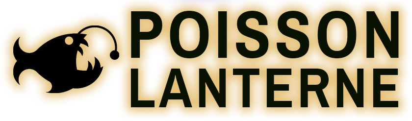

Présentation et contexte
Overview and context
Au cours de ma deuxième année de Master en Imagerie et 3D, nous avions eu un projet à réaliser en groupe sur une durée de 150 heures en lien avec notre formation. Moi et mon équipe avons fait le choix de créer un jeu d'énigmes reposant sur la manipulation de la lumière, que nous avons appelé Poisson Lanterne.
During my second year of a master's degree in Imaging and 3D, we had a group project to complete over 150 hours, tied to our programme. My team and I chose to build a puzzle game based on manipulating light, which we called Poisson Lanterne.
Le joueur explore des environnements mystérieux muni d'un poisson lumineux qu'il peut configurer (couleur RGB, mode de projection) pour résoudre des puzzles basés sur des phénomènes optiques réels : réflexion, absorption et fluorescence.
The player explores mysterious environments carrying a glowing fish that they can configure (RGB colour, projection mode) to solve puzzles based on real optical phenomena: reflection, absorption and fluorescence.
Mon rôle dans le projet
My role in the project
J'ai touché à plusieurs aspects du projet, mais mes contributions principales ont été la modélisation 3D, l'animation et le sound design.
I touched several aspects of the project, but my main contributions were 3D modelling, animation and sound design.
Avec Blender, j'ai modélisé et animé le Poisson Lanterne avant de l'exporter et de l'intégrer dans Unreal Engine 5. Sur la partie audio, j'ai travaillé sous FL Studio pour les ambiances sonores et les bruitages associés aux interactions du joueur.
With Blender, I modelled and animated the Poisson Lanterne before exporting it and integrating it into Unreal Engine 5. On the audio side, I worked in FL Studio on the ambient sound and the effects tied to the player's interactions.
En parallèle, j'ai travaillé sur le world building du jeu : définir l'identité de l'univers, son ambiance générale et m'assurer que les environnements, la lumière et le son racontent tous la même chose.
In parallel, I worked on the game's world building: defining the identity of the universe, its overall mood, and making sure the environments, the light and the sound all tell the same story.
Démonstrations techniques
Technical demonstrations
Voici quelques démonstrations des aspects du projet sur lesquels j'ai principalement travaillé :
Here are a few demonstrations of the parts of the project I mainly worked on:
Modélisation 3D
3D modelling
J'ai modélisé plusieurs éléments clés du jeu : les cristaux interactifs utilisés dans les énigmes, l'entrée du temple et le piédestal sur lequel repose le poisson. Les textures ont été gérées et ajustées directement dans Unreal Engine.
I modelled several key elements of the game: the interactive crystals used in the puzzles, the temple entrance and the pedestal on which the fish rests. Textures were handled and tuned directly in Unreal Engine.
Menu et UI
Menu and UI
Je me suis occupé du design et de l'implémentation des menus du jeu : style visuel, disposition des éléments et intégration dans Unreal Engine.
I handled the design and implementation of the game's menus: visual style, layout of the elements and integration into Unreal Engine.
Effets sonores et musiques
Sound effects and music
J'ai composé les musiques originales du jeu en cherchant une atmosphère cohérente avec l'univers visuel. Les effets sonores ont été créés à partir de samples retravaillés et d'enregistrements personnels.
I composed the game's original music, aiming for an atmosphere consistent with the visual universe. The sound effects were built from reworked samples and personal recordings.
Rigging et Animation du Poisson Lanterne
Rigging and animation of the Poisson Lanterne
Je me suis occupé du rigging et de l'animation du Poisson Lanterne (création du squelette ,animation idle et de tir) pour lui donner une présence naturelle et vivante dans l'environnement du jeu.
I handled the rigging and animation of the Poisson Lanterne (building the skeleton, idle and firing animations) to give it a natural, living presence in the game's environment.
Animations des bras
Arm animations
J'ai créé les animations des bras à la première personne : tir, marche et pick up. Une fois les animations réalisées sous Blender, je les ai exportées et intégrées dans Unreal Engine 5 pour les connecter aux mécaniques du jeu.
I created the first-person arm animations: firing, walking and pick up. Once the animations were done in Blender, I exported them and integrated them into Unreal Engine 5 to connect them to the game mechanics.
Galerie Photo
Photo Gallery
Video de gameplay
Gameplay video
Bilan
Takeaways
Ce projet m'a permis de consolider mon pipeline Blender vers Unreal Engine 5, notamment sur les questions d'export pour le temps réel. C'est aussi le projet sur lequel j'ai le plus travaillé le sound design, un aspect que j'ai eu envie de creuser davantage par la suite.
This project let me consolidate my Blender to Unreal Engine 5 pipeline, especially around export questions for real time. It is also the project on which I worked the most on sound design, an aspect I then wanted to dig into further afterwards.